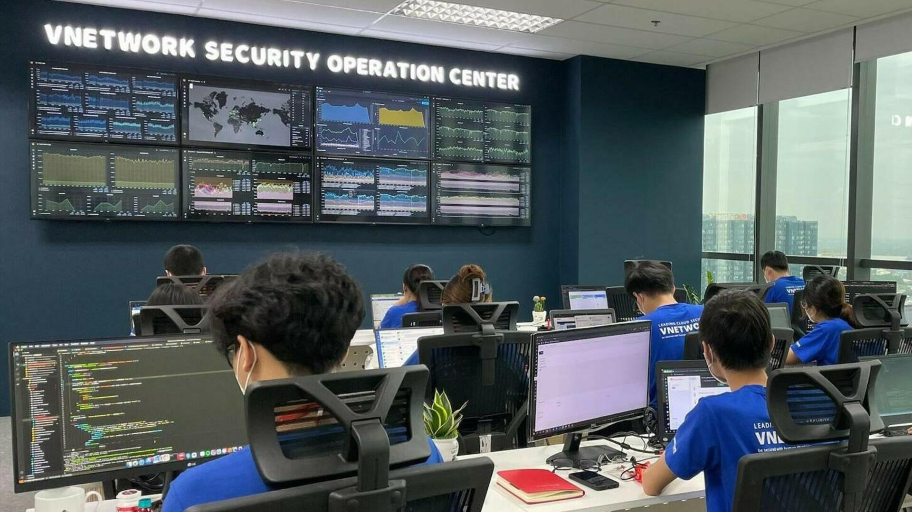
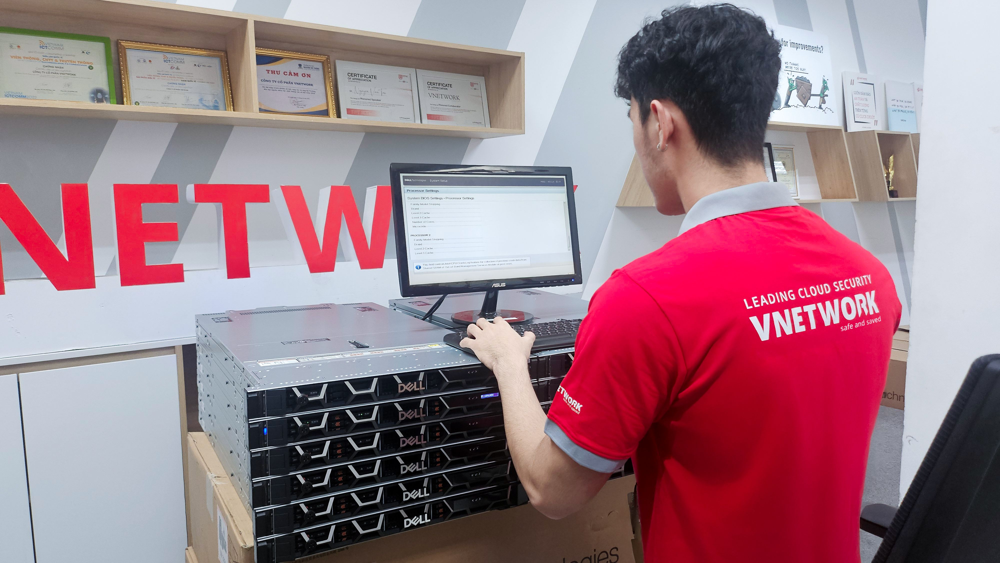

Huỳnh Tấn Dương
Sinh viên năm cuối Kỹ thuật Máy tính, tập trung vào hạ tầng mạng: cấu hình routing, switching, VPN, firewall và giám sát; đồng thời thực hành quản trị Linux/Windows Server.
Objective
Ứng tuyển vị trí Network/NOC Intern (ưu tiên) hoặc System Administration Intern. Mong muốn vận dụng kiến thức TCP/IP, routing & switching, VLAN, DNS, VPN và firewall vào vận hành, giám sát, xử lý sự cố hạ tầng mạng; đồng thời phát triển năng lực quản trị Linux/Windows Server.
Education
Kỹ sư Công nghệ Thông tin — chuyên ngành Kỹ thuật Máy tính
GPA 3.42 / 4.0 · 8.48 / 10


Kinh nghiệm làm việc
Thực tập sinh IT System Support
VNetwork
Hỗ trợ khách hàng và troubleshooting các vấn đề liên quan đến CDN, email server, email gateway, WAF, VPS và SSL.


Skills
Routing & Switching: TCP/IP, UDP, VLAN, BGP, OSPF, mLAG, LACP (Arista/Nexus).
DNS & Protocols: A/AAAA/CNAME/MX/TXT/NS/SRV; SPF/DKIM/DMARC/PTR; HTTP/2/3, QUIC, SMTP, POP3, IMAP.
VPN & Diagnostics: GRE/IPsec; nslookup, dig, traceroute, MTR, telnet, Wireshark.
Operating Systems: Linux (CentOS), Windows Server, Active Directory, Group Policy.
Web, Mail & Database: Apache, Nginx, OpenLiteSpeed, Plesk, CyberPanel, Postfix, Dovecot, IceWarp, MariaDB, phpMyAdmin.
Data Center: Lắp rack, đi dây LAN/quang, thay RAM/CPU/Disk, quy trình thiết bị Tier III.
Network Monitoring: SNMP, Zabbix, PRTG; theo dõi availability, hiệu năng và cảnh báo.
Troubleshooting: Wireshark, nslookup, dig, traceroute, MTR, telnet.
Log & HTTP: ELK Stack; phân tích lỗi 4xx/5xx.
Firewall & IDS/IPS: pfSense, Suricata; rule, DMZ, traffic filtering.
Network Security: ARP spoofing/MITM analysis, DAI, DHCP Snooping, WAF/WAAP, DDoS L3/4/7.
Secure Services: SSL/TLS, IPsec VPN, SSH hardening.
Virtualization & Cloud: OpenNebula, VCloud (public/private/hybrid).
Storage Networking: TrueNAS SCALE, iSCSI, LUN, multipath, OpenZFS.
Traffic Delivery: Nginx upstream, load balancing, health checks, CDN/cache basics.
IT Support: Incident, Problem, Service Request, Change; theo dõi SLA.
POC: Hỗ trợ dùng thử, tích hợp dịch vụ, xử lý lỗi cấu hình.
Problem Solving: Logic Trees, MECE, quy tắc 80/20.
Projects — Network & Systems
pfSense Firewall và Suricata IDS/IPS

ARP Spoofing
 ▶ Watch demo
▶ Watch demo
VPN GRE Tunnel và IPsec

Load Balancing with Nginx
 ▶ Watch demo
▶ Watch demo
Zabbix Infrastructure Monitoring

Centralized SAN Storage
 ▶ Watch demo
▶ Watch demo
Windows Server Profile Management
 ▶ Watch demo
▶ Watch demo
Brute-force Detection and Prevention
 ▶ Watch demo
▶ Watch demo